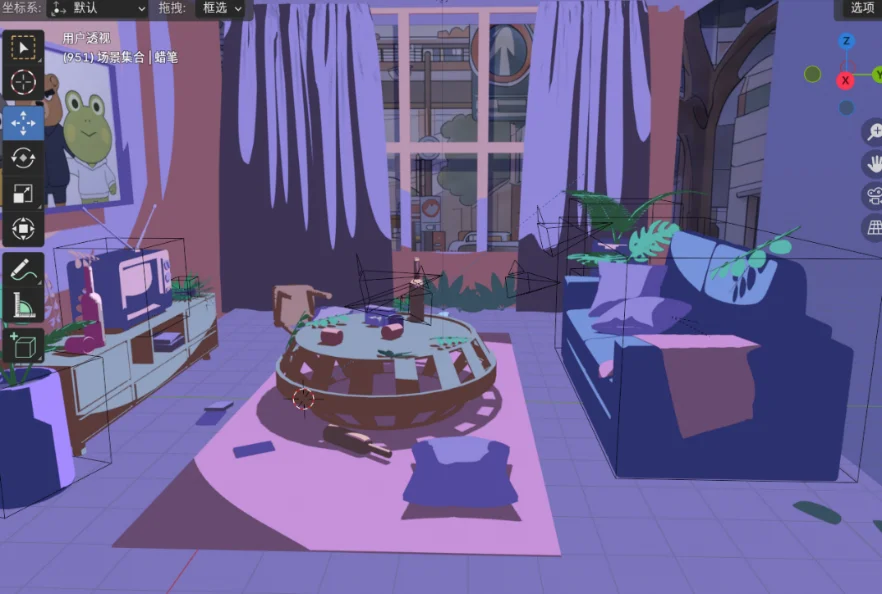

STORY · 故事四幕
跟着色调，走进蛤蟆的内心
短片改编自心理学经典《蛤蟆先生去看心理医生》的世界观，按「冲突 — 疏导 — 反思 — 和解」四幕推进。随着蛤蟆心境的变化，画面色调从压抑的冷紫一步步走向明亮的暖黄——颜色，就是这部片子的心理语言。

❄ 冷紫色调 · 压抑紧绷第一幕 · 庄园客厅朋友之间的争执
开篇即冲突：獾严厉指责蛤蟆荒废庄园、生活消沉，甚至觉得他对不起去世的父母；鼹鼠急忙辩护，认为蛤蟆需要的是安慰而不是指责。争吵不断升级，长期压抑的蛤蟆终于喊出一声「够了」，夺门而出——客厅陷入死一般的寂静。
心理关键词长期压抑 · 自我否定 —— 低饱和冷紫色调烘托紧绷的家庭氛围